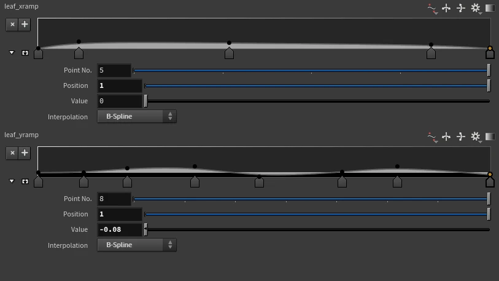
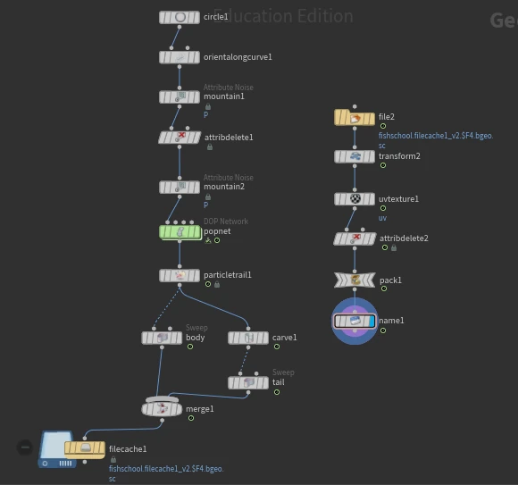
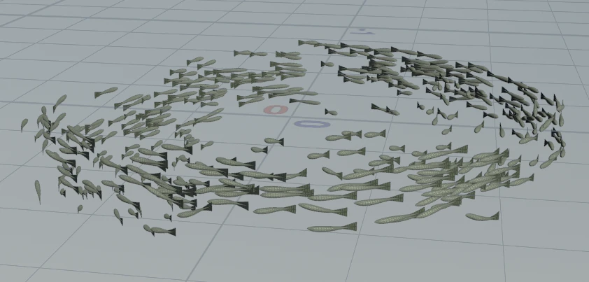

Case Study · April 2026
Kelp Forest
A dense underwater ecosystem combining procedural kelp, simulated fish schools, terrain, water volume, and atmospheric lighting.
RoleProcedural Environment & FX
ToolsHoudini · Karma
DateApril 2026
Organic form through reusable controls
Two ramps control leaf width, taper, waviness, and irregularity. The procedural leaf feeds an L-system that generates multiple kelp structures for scattering.

Variation at environment scale
Points scattered across the height field receive randomized variant attributes before Copy to Points distributes five kelp variations throughout the scene.
POP-driven schooling motion
Particles emitted from a circular source are shaped by drag, axis force, and attribute noise. Trails become curves, and sweep operations construct procedural fish bodies and tails aligned to the simulation.

Depth through volume and light
A HeightField forms the terrain, an extruded mountain grid forms the water volume, and VDB fog creates falloff. The final scene contains about 39.1 million polygons and 1.2 million curves.
